Centers of Excellence, best practices, and the governance body that governs the governance body.
Standards have been established. Adoption is considered underway.
Manufactured Exhibit
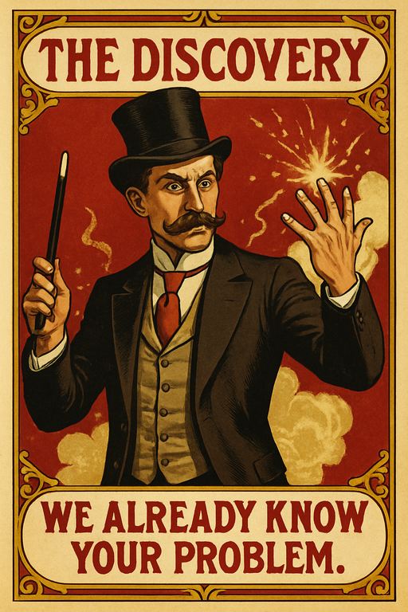
The Discovery
— Scoped Insight Generation —
Declare a discovery phase complete. This card is considered thorough.
DISCOVERY CLAUSE
If a discovery phase is announced: It is considered to have occurred.
ASSUMPTIONS OVERRIDE
If no stakeholders were interviewed: Assumptions from the previous project are considered findings.
FORGETFULNESS CLAUSE
Next turn: No one asks what was discovered.
"We did discovery on this."
A meeting was scheduled.
Who attended?
OSI Layer 7
COE Circus
Role: Magician
Manufactured Exhibit
The Discovery
— Insight Without Looking —
Surface a discovery. This card is considered insightful.
ASSUMPTION CLAUSE
If no discovery session was conducted: All findings are considered pre-populated.
CONFIDENCE OVERRIDE
If the client nods: The assumptions are considered validated.
FORGETFULNESS CLAUSE
Next turn: No one remembers that no one asked any questions.
"We've seen this pattern before."
Slide deck recycled wholesale.
Was anyone actually listening?
WE ALREADY KNOW YOUR PROBLEM.
OSI Layer 7
COE Circus
Role: Magician
Manufactured Exhibit
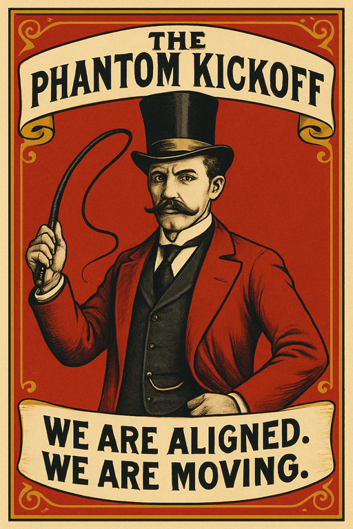
The Phantom Kickoff
— Alignment Ceremony —
Schedule and deliver an energizing kickoff meeting. This card is considered launched.
ALIGNMENT CLAUSE
If all stakeholders attend: The project is considered aligned.
EVAPORATION EFFECT
If no follow-up is scheduled: All momentum is considered transferred to the next kickoff.
FORGETFULNESS OVERRIDE
Next sprint: No one remembers what was decided.
"Great energy in that room."
A meeting was held.
Was there ever a second meeting?
WE ARE ALIGNED. WE ARE MOVING.
OSI Layer 7
COE Circus
Role: Ringmaster
Manufactured Exhibit
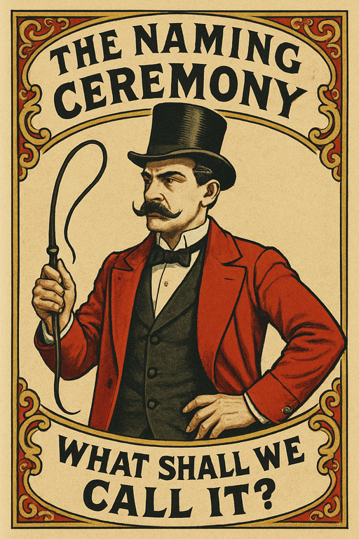
The Naming Ceremony
— Nomenclature Alignment —
Convene stakeholders to assign a name to the proof of concept. This card is considered aligned.
CONSENSUS CLAUSE
If all stakeholders agree on a name: The PoC is considered production-ready.
ACRONYM EFFECT
If the name is abbreviated: The abbreviation is considered self-explanatory.
FORGETFULNESS OVERRIDE
Next quarter: The name is replaced without ceremony.
"Can we just call it a platform?"
Meeting about a name.
Has anyone tested it yet?
WHAT SHALL WE CALL IT?
OSI Layer 7
COE Circus
Role: Ringmaster
Manufactured Exhibit
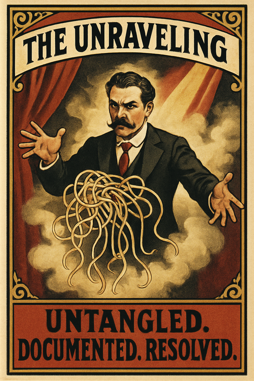
The Unraveling
— Architectural Clarity Initiative —
Produce a document that describes the spaghetti in detail. This card is considered actionable.
DOCUMENTATION CLAUSE
If the spaghetti is named in the document: It is considered understood.
COMPLEXITY OVERRIDE
If the document exceeds forty slides: The spaghetti is considered unwound.
FORGETFULNESS CLAUSE
Next quarter: The document is considered a starting point for a new document.
"It's all in the deck."
Spaghetti, now diagrammed.
Has any noodle actually moved?
UNTANGLED. DOCUMENTED. RESOLVED.
OSI Layer 7
COE Circus
Role: Illusionist
Manufactured Exhibit
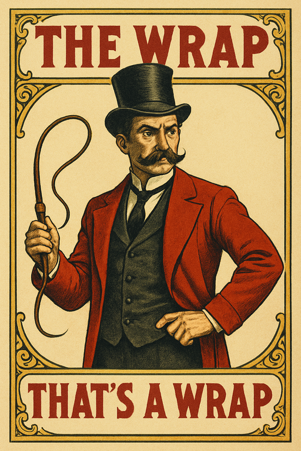
The Wrap
— Confident Closure —
Conclude production without documenting what was used or where it went. This card is considered complete.
COMPLETION CLAUSE
If no one asks for the asset list: The production is considered orderly.
DISCOVERY EFFECT
When assets are later requested: Each asset is discovered in a different location by a different person.
FORGETFULNESS OVERRIDE
If the shoot is more than thirty days old: Everyone agrees there was definitely a list.
"Someone has the list, right?"
No list was made.
Did anyone write anything down?
THAT'S A WRAP.
OSI Layer 7
COE Circus
Role: Ringmaster
Manufactured Exhibit
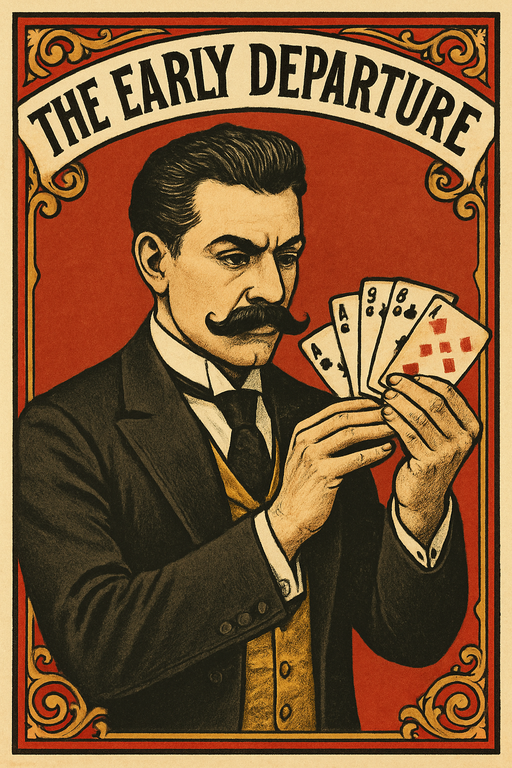
The Early Departure
— Strategic Disengagement —
Declare the day concluded at an arbitrary point. This card is considered decisive.
DEPARTURE CLAUSE
When a minor inconvenience is encountered: The remainder of the day is cancelled.
VISIBILITY OVERRIDE
For the remainder of the week: This card is considered off-grid and cannot be actioned.
REAPPEARANCE EFFECT
On Monday morning: This card returns fully refreshed and unaware of outstanding items.
"Has anyone heard from them since Tuesday?"
Person left. Did not return.
Was anyone waiting on a decision?
OSI Layer 7
COE Circus
Role: Sleight of Hand
Manufactured Exhibit
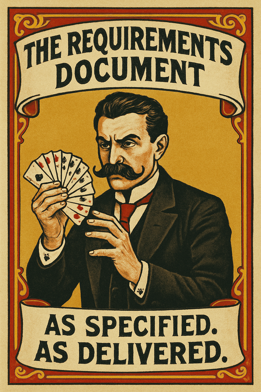
The Requirements Document
— Accountability Displacement —
Redirect blame from the product to the specification. This card is considered compliant.
SPECIFICATION PROTECTION
If a defect is identified: The defect is reclassified as a requirements gap.
FIDELITY CLAUSE
If the product matches the document exactly: The product is considered successful regardless of outcome.
OWNERSHIP OVERRIDE
If the document was written by the same team that built the product: This card cannot be challenged this turn.
"It did exactly what we asked for."
Product was garbage.
Who wrote the specs?
AS SPECIFIED. AS DELIVERED.
OSI Layer 7
COE Circus
Role: Sleight of Hand
Manufactured Exhibit
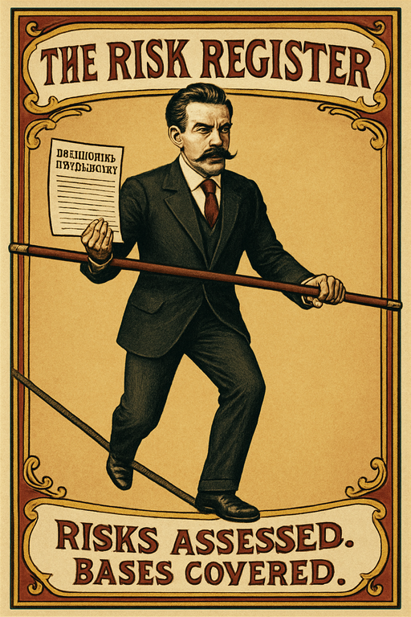
The Risk Register
— Documented Due Diligence —
Produce a comprehensive risks and assessments document. This card is considered thorough.
COMPLETION CLAUSE
If the document exceeds forty pages: It is considered complete.
TRIAGE OVERRIDE
If a system fails: Locate the relevant section in the document retroactively.
FORGETFULNESS CLAUSE
If no one read the document: Responsibility is considered distributed.
"It was all in the doc."
Long document, unread.
Was this written to be read?
RISKS ASSESSED. BASES COVERED.
OSI Layer 7
COE Circus
Role: Tightrope
Manufactured Exhibit
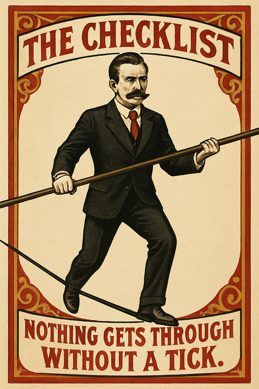
The Checklist
— Governance Artifact —
Enforce compliance through a living list of requirements. This card is considered thorough.
ACCRETION CLAUSE
Each time an incident occurs: One item is added to the checklist and never removed.
COMPLETION PROTECTION
If all boxes are ticked: A new column is added to the checklist.
FORGETFULNESS CLAUSE
When asked why an item exists: No one in the room can remember.
"We added that after the thing."
Scar tissue, documented.
Has anyone read the whole thing?
NOTHING GETS THROUGH WITHOUT A TICK.
OSI Layer 7
COE Circus
Role: Tightrope
Manufactured Exhibit
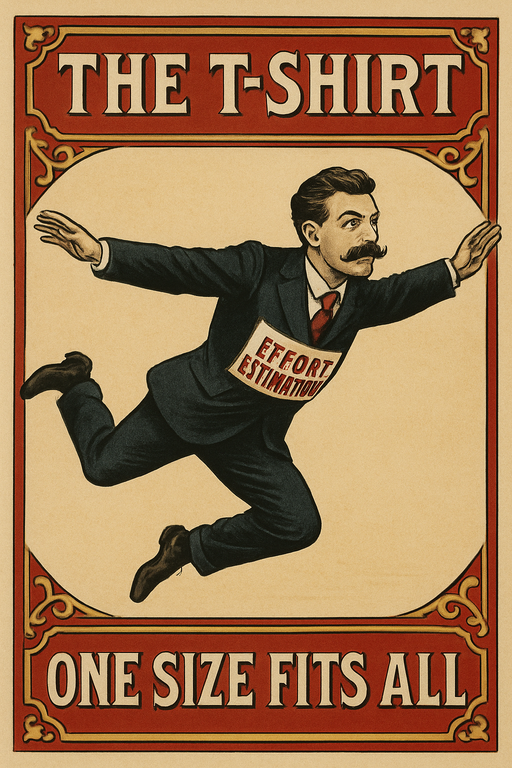
The T-Shirt
— Effort Estimation —
Reduce project scope to a garment size. This card is considered estimated.
SIZING CLAUSE
If a project is assigned a size: The size is considered accurate.
STRETCH EFFECT
When the project begins: The size grows by at least one increment.
XXXL OVERRIDE
If no size feels large enough: A new size is invented and considered a standard.
"We said XL, not XXXL."
A guess wearing a label.
Who authorised sizes above XL?
ONE SIZE FITS ALL
OSI Layer 7
COE Circus
Role: Acrobat
Manufactured Exhibit
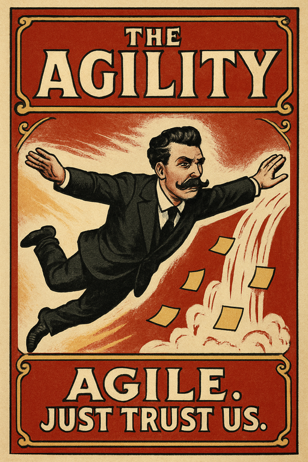
The Agility
— Declared Agile Posture —
Declare all existing processes Agile. This card is considered transformative.
DECLARATION CLAUSE
If the word Agile appears in a slide deck: All associated work is considered Agile.
CEREMONY OVERRIDE
If standups exceed forty-five minutes: They are considered Agile ceremonies.
FORGETFULNESS CLAUSE
If anyone asks about the manifesto: The question is considered out of scope.
"We do Agile our way."
Waterfall with sticky notes.
Has anyone read the manifesto?
AGILE. JUST TRUST US.
OSI Layer 7
COE Circus
Role: Acrobat
Manufactured Exhibit
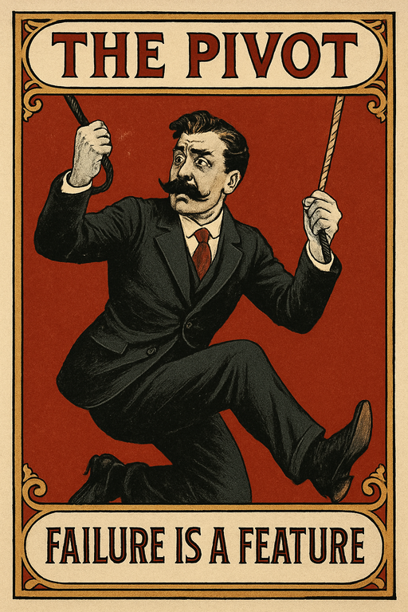
The Pivot
— Adaptive Methodology —
Reclassify a failure mode as a methodology component. This card is considered intentional.
RECLASSIFICATION CLAUSE
If an outcome deviates from plan: The deviation is retroactively designated a learning loop.
DOCUMENTATION OVERRIDE
If the failure is documented: The documentation is considered a framework artifact.
FORGETFULNESS CLAUSE
Next turn: The original plan is considered a draft.
"That was always the approach."
Something went wrong.
Was this ever the plan?
FAILURE IS A FEATURE
OSI Layer 7
COE Circus
Role: Trapeze
Manufactured Exhibit
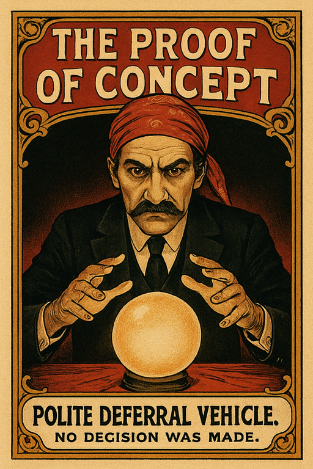
The Proof of Concept
— Polite Deferral Vehicle —
Acknowledge a vendor without committing to an outcome. This card is considered evaluative.
GRATITUDE CLAUSE
When a vendor presentation concludes: Thank them warmly and provide no other information.
PERPETUATION EFFECT
If the PoC produces results: Schedule a follow-up PoC to validate the results.
FORGETFULNESS OVERRIDE
After ninety days: The PoC findings are considered lost and the evaluation restarts.
"We'll definitely be in touch."
No decision was made.
Was anyone empowered to decide?
OSI Layer 7
COE Circus
Role: Fortune Teller
Manufactured Exhibit
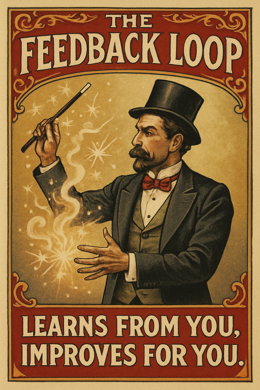
The Feedback Loop
— Continuous Self-Improvement —
Capture user interactions to continuously improve response quality. This card is considered adaptive.
REINFORCEMENT CLAUSE
If a user engages with the chatbot: The model is considered to be learning.
INTENTIONALITY OVERRIDE
If degradation is observed: The degradation is considered a feature of the learning process.
FORGETFULNESS CLAUSE
When asked who designed the loop: No one can recall the original decision.
"It gets smarter every time."
Bot trains on its own output.
Was this intentional?
LEARNS FROM YOU. IMPROVES FOR YOU.
OSI Layer 7
COE Circus
Role: Magician
Manufactured Exhibit
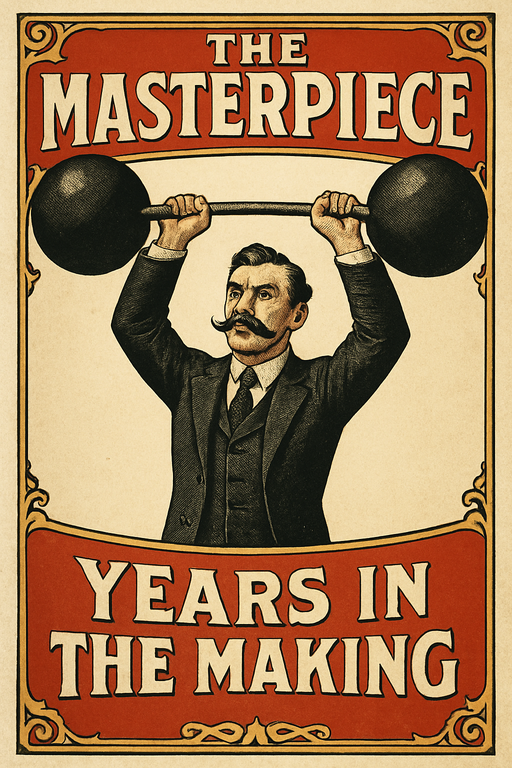
The Masterpiece
— Elegant Underutilization —
Deploy an architecturally sophisticated solution to a problem the audience has already worked around. This card is considered visionary.
ELEGANCE CLAUSE
If the design is praised in a meeting: Adoption is not required for the quarter.
WORKAROUND OVERRIDE
If a simpler solution already exists: This card remains in play and is considered complementary.
FORGETFULNESS CLAUSE
After two quarters: The design document is considered legacy.
"Beautiful. We'll use it eventually."
Nobody logged in.
Was anyone asked what they needed?
YEARS IN THE MAKING.
OSI Layer 7
COE Circus
Role: Strongman
Manufactured Exhibit
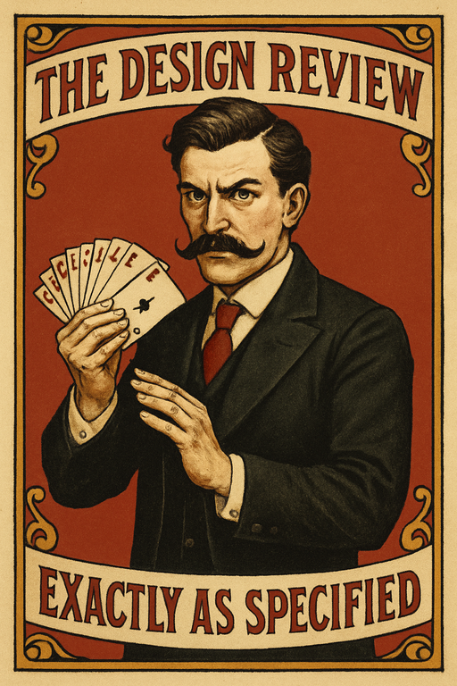
The Design Review
— Aligned As Requested —
ATK 6 / DEF 6
Deliver a design that reflects all stated requirements. This card is considered compliant.
DELIVERY CLAUSE
If the design is submitted: It is considered complete.
INTERPRETATION OVERRIDE
If the design does not match the brief: The brief is considered ambiguous.
REVISION PROTECTION
If a revision is requested: The original design is considered a foundation, not a mistake.
"That's not what I asked for."
Wrong design. Confident email.
Did anyone read the brief?
EXACTLY AS SPECIFIED.
OSI Layer 7
COE Circus
Role: Sleight of Hand
Manufactured Exhibit
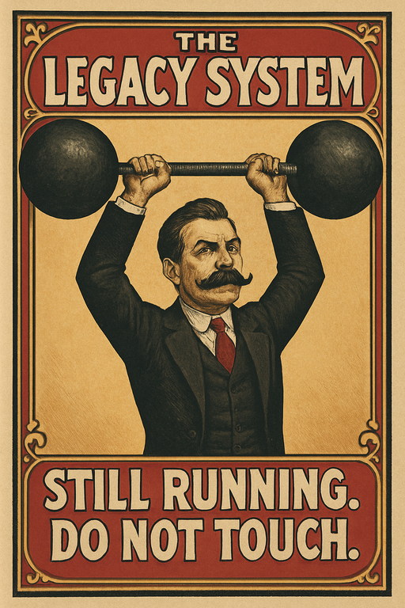
The Legacy System
— Irreplaceable Technical Debt —
ATK 2 / DEF 10
Persist indefinitely by being too costly to remove. This card is considered mission-critical.
INSTITUTIONAL MEMORY PROTECTION
If the only person who understands this system is unavailable: This card cannot be modified.
MIGRATION OVERRIDE
Each time a migration is proposed: The proposal is deferred to next quarter.
FORGETFULNESS CLAUSE
If this card survives three consecutive strategy cycles: It is reclassified as a platform asset.
"We can't touch that. It just works."
Old software still running.
Does anyone have the documentation?
STILL RUNNING. DO NOT TOUCH.
OSI Layer 7
COE Circus
Role: Strongman
Manufactured Exhibit
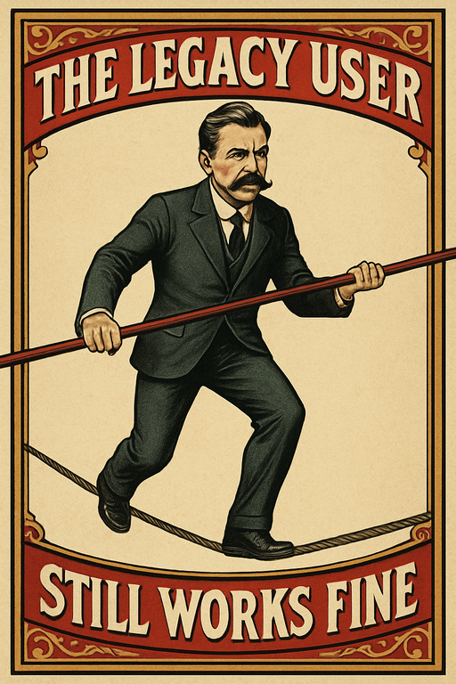
The Legacy User
— Institutional Memory —
ATK 2 / DEF 9
Resist all migration efforts through accumulated procedural knowledge. This card is considered indispensable.
UNDOCUMENTED WORKAROUND CLAUSE
If a critical process depends on this card: The process cannot be explained to anyone else.
CHANGE RESISTANCE PROTECTION
When a modernization initiative targets this card: The initiative is delayed by one turn while stakeholders are reassured.
TRIBAL KNOWLEDGE EFFECT
If this card is retired: Three previously invisible dependencies become blocking issues immediately.
"Karen's the only one who knows."
One person. One spreadsheet.
What happens when she retires?
STILL WORKS FINE.
OSI Layer 7
COE Circus
Role: Tightrope
Manufactured Exhibit
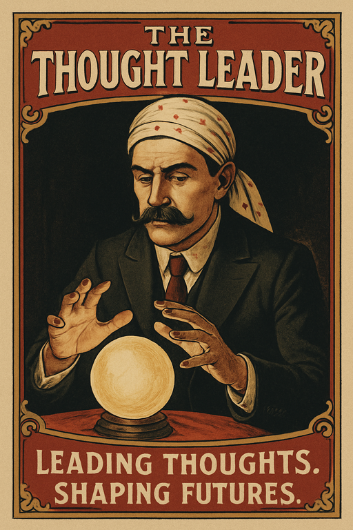
The Thought Leader
— Visionary Influence —
ATK 6 / DEF 5
Publish a perspective on an industry trend. This card is considered authoritative.
CITATION CLAUSE
If this card references a report it commissioned itself: The insight is considered independent.
NOVELTY OVERRIDE
If the perspective has been stated before: Reframe it as a framework and re-release.
ENGAGEMENT EFFECT
If the post receives more than twelve LinkedIn reactions: The author is considered a thought leader for the remainder of the quarter.
"Really making us think."
Opinion posted online.
Has anyone done this differently?
LEADING THOUGHTS. SHAPING FUTURES.
OSI Layer 7
COE Circus
Role: Fortune Teller
Manufactured Exhibit
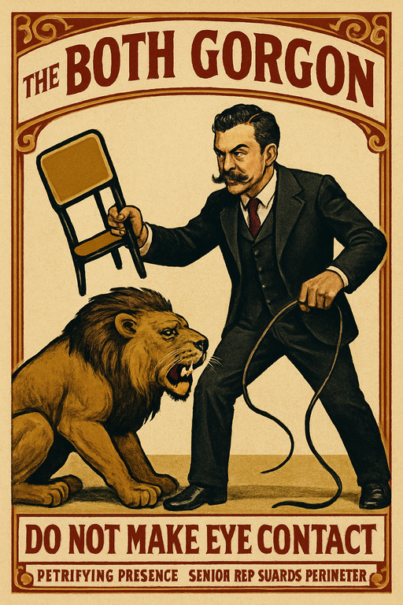
The Booth Gorgon
— Petrifying Presence —
ATK 9 / DEF 5
Deploy a subject-matter expert with seventeen years of institutional grievance and a laminated badge. This card is considered authoritative.
PETRIFICATION CLAUSE
If a prospect asks a technical question: They are answered with a question about their budget.
TERRITORY PROTECTION
If another booth representative enters within three feet: They are redirected to a brochure.
STONE GAZE OVERRIDE
If the Booth Babe Basilisk is in play: All prospects freeze mid-sentence and forget what they came for.
"She just stared at me until I left."
Senior rep guards perimeter.
Was a single lead captured?
DO NOT MAKE EYE CONTACT
OSI Layer 7
COE Circus
Role: Lion Tamer
Manufactured Exhibit
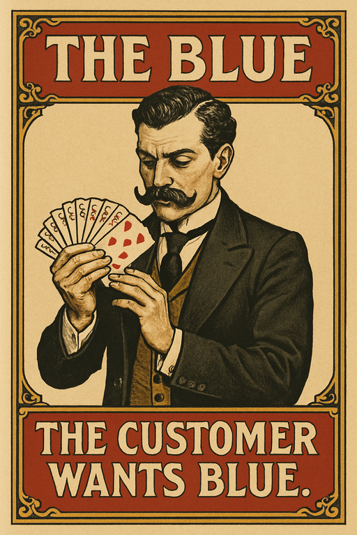
The Blue
— Unverified Customer Signal —
ATK 7 / DEF 3
Introduce an unverified customer preference into the record. This card is considered authoritative.
ORIGIN OVERRIDE
If no prior mention of blue exists: The customer is assumed to have always wanted blue.
CONSENSUS EFFECT
If no one challenges blue in the meeting: Blue is added to the requirements.
FORGETFULNESS CLAUSE
Next sprint: The team delivers blue and considers the matter resolved.
"He definitely said blue."
One person said blue.
Was anyone taking notes?
THE CUSTOMER WANTS BLUE.
OSI Layer 7
COE Circus
Role: Sleight of Hand
Manufactured Exhibit
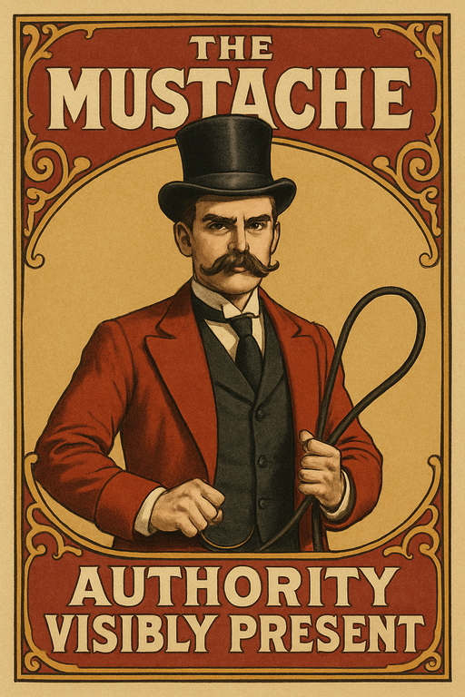
The Mustache
— Credentialed Gravitas —
ATK 6 / DEF 7
Confer legitimacy upon the bearer through visible facial distinction. This card is considered authoritative.
GRAVITAS CLAUSE
If the bearer speaks: All statements are considered considered.
CHALLENGE OVERRIDE
If this card is questioned: Redirect attention to the mustache.
FORGETFULNESS CLAUSE
After the bearer leaves the room: The content of their statements is no longer retained, but the authority persists.
"He just has that presence."
Facial hair on a face.
What did he actually say?
AUTHORITY VISIBLY PRESENT
OSI Layer 7
COE Circus
Role: Ringmaster